Olympus Lands 有时你必须退后一步才能看到更大的图景Olympus Lands NFT - 常见问题（FAQ） ▶ 什么是奥林巴斯大陆？ Olympus Lands 是一个 NFT（非同质代币）集合。存储在区
Olympus_NFT 6000 个半神变成了 NFT 退化。拥有 NFT 可以访问我们的 ShitGreek Alpha Group。免费薄荷，这样你就可以损失更多的钱。糟糕的艺术，糟糕的阿尔法。Olympus Gods NFT NFT
OMBO Omnichain 最丰富多彩的角色 OMBOOMBO NFT - 常见问题（FAQ） ▶ 什么是 OMBO？ OMBO 是 NFT（替代代币）集合。存储在区块链上的数字收藏品不可收藏。 ▶ 存在多少个OM
Omega Kongs by Alpha Kongs Club 由《星球大战》、《权力的游戏》、《神奇宝贝》等作品背后的艺术家制作的 10.000 只 Omega Kong 茁壮成长的时机已经到来。Omega Kongs Club NFT - 常见问题（FAQ） ▶ 什
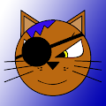 OmgCats Series #1 这是壮观的 OmgCats 的第一个系列 - 130 张有趣的猫的独特图片。购买我们的 NFT OmgCats - 您帮助我们开发新的数字游戏 OmgCats！OmgCats 系列 #1 NFT - 常见问题
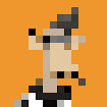 omni Apes omni Apes 是一个 cc0 layerzero 全链 nft 集合，在整个区块链上免费铸造。omni Apes (poly) NFT - 常见问题（FAQ） ▶ 什么是全猿（poly）？ omni Apes (poly) 是一个 NFT (Non-fungible token) 集合。存储在
omni Apes (poly) omni Apes 是一个 cc0 layerzero 全链 nft 集合，在整个区块链上免费铸造。omni Apes (eth) NFT - 常见问题（FAQ） ▶ 什么是全猿（eth）？ omni Apes (eth) 是一个 NFT (Non-fungible token) 集合。存储在区
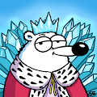 Omni Bears ETH Omni Bears ETH NFT - 问题常见（FAQ） ▶ 什么是 Omni Bears ETH？ Omni Bears ETH 是一个 NFT（不可替代代币）集合。存储在区块链上的数字收藏品集合。 ▶ Omni Bears ETH 代币有多少？
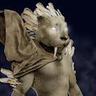 Omni Beast (Ethereum) 以太坊上的 3434 只野兽 | 7 条区块链中的 8K 野兽 | 基于 layerzero 的全链 | 跨链共鸣Omni Beast（以太坊）NFT问题 - 常见（FAQ） ▶ 什么是 Omni Beast（
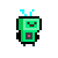 Omni Bots (eth) Omni Bots，一个全链 cc0 的 Bot 集合。每笔交易免费铸造 2 个。Omni Bots (eth) NFT - 常见问题 (FAQ) ▶ 什么是 Omni Bots (eth)？ Omni Bots (eth) 是一个 NFT（替代令牌）集合。
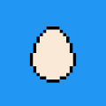 omni chicks (poly) 10k cc0 全向小鸡在 7 个不同的链中漫游omni chicks (poly) NFT - 常见问题（FAQ） ▶ 什么是全能小鸡（poly）？ omni chicks (poly) 是一个 NFT（非同质代币）集合。存储在
Omni Doors (poly) Layer0 全链 NFT | 10k 铸造 | 没有路线图或不和谐，只有门和钥匙（第一个cc0游戏）跨链传播OmniDoors (poly) NFT - 问题常见 (FAQ) ▶ 什么是OmniDoors（
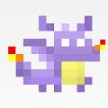 Omni Dragons (polygon) 跨链 bsc 和多边形集合 nft | 1.500 龙 | 没有不和谐或路线图，只是与龙相处Omni Dragons（结束） NFT - 问题常见（FAQ） ▶ 什么是 Omni Dragons（终
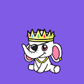 Omni Elephants 你的可爱、可爱和友好的大象它们只提供纯粹的 fomo 和 degen。Omni Elephants NFT - 问题常见（FAQ） ▶ 什么是全能大象？ Omni Elephants 是一个 NFT（非同质代币）集
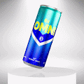 Omni Energy Omni Energy 是关于回馈人民的。我们希望创建一家公司，与其持有者携手合作，共同创造第一个将在市场上零售的 NFT 能量饮料！关于我们项目的经济路径的个人投票权
Omni Legion 1,100 个独特的 NFT，它们是天体元素世界的一部分。每个元素都由 7 个元素之神之一提供动力，其力量来自元素的创造者元素之王。▶ 什么是全能军团？ Omni Legion 是
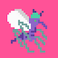 Omni Mosquitoes (POLY) 我们喝的都是 TXN 哈希，而不是人类的血。Omnichain cc0 项目。Omni Mosquitoes (POLY) NFT - 常见问题 (FAQ) ▶ 什么是全能病毒子（POLY）？ Omni Mosquitoes (POLY) 是一个 NFT (Non-fungible token) 集
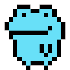 Omni Node Toads (ETH) 感觉青蛙？飞跃！4000 cc0 节点克隆实用程序 Toads 跨越 7 个不同的链。.002 Eth 每个。克隆现有的 justcubes 节点以获得相同的功能，但网络负载更少。不隶属于ju
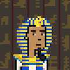 Omni Pharaohz (poly) 3k 完全薄荷免费 | cc0 layerzero 全链 NFT 出来统治 NFT 跨链Omni Pharaohz NFT - 问题常见（FAQ） ▶ 什么是全能法老？ Omni Pharaohz 是一个 NFT（不可替代令牌）集合。存储在区块链
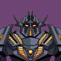 Omni Robotics (Polygon) c00lest r0b0ts af 0n Layer0 Labs 的生产Omni Robotics（多边形）NFT - 常见问题（FAQ） ▶ 什么是 Omni Robotics（多边形）？ Omni Robotics (Polygon) 是一个 NFT (Non-fungible token) 集合。
OmniBird (Polygon) cc0 LayerZero 全链 NFT 10k Genesis Pixel Birds 飞过锁链。 没有路线图或不和谐，只有共鸣。OmniBird（） NFT - 问题常见（FAQ） ▶ 什么是 OmniBird（终结）？ OmniBir (Polygon) 是
Omnicat's World Omnicat 的世界 NFT - 问题常见（FAQ） ▶ 什么是 Omnicat 的世界？ Omnicat’s World 是一个 NFT（非同质代币）集合。存储在区块链上的数字收藏品集合。 ▶ Omnicat的世界代
OmniDoors Layer0 全链 NFT | 10k 铸造 | 没有路线图或不和谐，只有门和钥匙（第一个cc0游戏）跨链传播OmniDoors NFT - 常见问题（FAQ） ▶ 什么是 OmniDoo
OmniForce 当邪恶的 OmniTron 将他的灵魂植入一个能够跨维度穿越的完全机械化的身体中时，他创造了一股穿越时空的破坏浪潮。现在，控制论增强的 OmniForce 战斗机可能是 Omniverse 的最后希
OmniFrogs (Polygon Collection) 1000 只青蛙在全链上放松。OmniFrogs（集合问题）（NFT - 常见FAQ） ▶ 什么是 OmniFrogs（末端集合）？ OmniFrogs (Polygon Collection) 是一个 NFT (Non-fungible token) 集合。存
Planet IX Planet IX 是一款基于 NFT 的 GameFi 策略游戏。将我们星球的虚拟副本作为您的游戏场，您的目标是让地球恢复往日的绿色和蓝色荣耀——您可以通过获取称为 PIX 的土地、收
Planet Sandbox Planet Sandbox 是一款物理驱动的 NFT 沙盒射击游戏，允许玩家建造和拥有竞技场，使用自己的 NFT 武器和配件在不同的游戏模式下与其他玩家战斗。在 $PSB 和 $PULV 代币的支持下，
Planet Wars Planet Wars 是一款基于币安智能链，包含 NFT、DeFi 和游戏化概念的太空对战游戏。星球大战星系由 1123 个 NFT 行星组成。他们每个人都有影响游戏奖金的独特特征
Planet ZUUD : Tiger Warriors Planet ZUUD 是一个新创建的世界，它将成为一系列手绘 NFT 收藏的舞台。它是根据故事情节设计的，该故事情节将涵盖在 ZUUD 星球上开发的所有 NFT 收藏。它可以在必要时扩
PlanetCrypto 世界上最大的收藏品战略游戏 - 建立您的帝国并赚取 $TRX Planet Crypto 是迄今为止最大的加密收藏品游戏 - 我们将整个全球地图变成了 2000 万平方米的土地，让您可以在地球
Pssssd Originals 包含 10,000 个动画 NFT 的爆发。被附身的NFT 由 PSSSSD Labs 开发的创新 NFT 以增强您的创造力。 唤醒你的创造力，相信每个出生的人都拥有创造力。当我们 3 岁时，我们的想
Quantic Qube Qube 是一个建立在币安智能链网络上的去中心化 BUSD 矿工，旨在被动奖励稳定币 BUSD 的持有者。当您使用 dApp 存入 BUSD 时，您将收到： BUSD 每日高达 8% ~ 2920% 年利率 8% 推荐奖金
Qubit Finance Qubit 是一个去中心化的货币市场平台，它利用区块链的速度、自动化和安全性来高效、安全地连接借贷双方。 Qubit Finance 的用户可以作为贷方和借方参与。 贷方：作为流
QuickSwap QuickSwap 是基于以太坊的无许可去中心化交易所 (DEX)，由 Matic Network 的第 2 层可扩展性基础设施提供支持。通过利用第 2 层进行交易，QuickSwap 用户将能够


，由 Matic Network 的第 2 层可扩展性基础设施提供支持。通过利用第 2 层进行交易，QuickSwap 用户将能够以接近零的 gas 成本以闪电般的速度交易任何 ERC20 资产。")